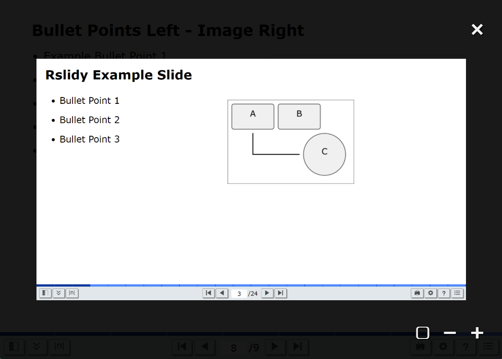

Rslidy
-
Inspired by Slidy and Slidy2.
-
Responsive HTML5, CSS3, JavaScript (TypeScript).
-
Slides are defined in blocks
<div
class="slide">...</div> or <section>...</section>.
-
No other dependencies.
-
Lightweight.
Rslidy File Sizes
| File |
Size (Bytes) |
Minified Size (Bytes) |
Minified and Gzipped (Bytes) |
| rslidy.js |
149,083 |
84,163 |
18,069 |
| rslidy.css |
37,043 |
24,339 |
6,362 |
Overview of Rslidy's Features
-
Slide Viewer:
- Animated slide transitions.
- Overview panel.
- Table of contents panel.
- Navigable progress bar.
- All slides view.
- Help page.
-
Responsive Layout and Interactions:
- Portrait + landscape.
- Swipe, pinch, tap.
- Tilt, shake.
- Keyboard.
- Mouse pointer, mouse wheel.
Image Viewer

The image viewer is automatically attached to every image.
Pan and zoom via mouse, keyboard, or on-screen controls.
Screen capture taken from Rslidy.
Settings
- Toggle features.
- Adjust font sizes.
- Low light mode.
- Print style sheet.
- Both stored in localstorage (if available).
Accessibility
- ARIA (Accessible Rich Internet Applications) roles and properties, updated at runtime.
- Accessible HTML5 elements, such as
<nav> and <main>.
- Fully navigable with keyboard shortcuts.
- Font sizes are freely adjustable.
- Screen reader friendly. (Tested with JAWS and NVDA. Special thanks go to Christopher Kopel.)
Gesture Support
- Swipe.
- Margin tap (similar to that of e-readers).
- Tilt/Tip.
- Shake.
Tilt and tip gestures can be used for navigation (in addition to swipe and tap gestures).
Illustration made by the author using Inkscape.
Source Code Highlighting using Prism.js
Displayed code snippets:
<body>
<section id="code-example">
<h1>Source Code Highlighting!</h1>
<h2>Or through third-party tools.</h2>
</section>
</body>
Inline code snippets:
background-color: rgba(0, 0, 0, 0.9);
Including Live Code for Interactive Content
Responsive Tables
| Feature |
Shower |
Reveal.js |
Deck.js |
impress.js |
Bespoke.js |
Inspire.js |
| Collaborative |
✘ |
✘ |
✘ |
✘ |
✘ |
✘ |
| SVG Inclusion |
✔ |
✔ |
✔ |
✔ |
✔ |
✔ |
| Globally Change Bullet Spacing |
✔ |
✔ |
✔ |
✔ |
✔ |
✔ |
| Change Bullet Indentation |
✔ |
✔ |
✔ |
✔ |
✔ |
✔ |
| Export as PDF |
✔ |
✔ |
✘ |
✘ |
✔ |
✘ |
| Export as HTML |
✔ |
✔ |
✔ |
✔ |
✔ |
✔ |
| Export as PowerPoint |
✘ |
✘ |
✘ |
✘ |
✘ |
✘ |
| Slide numbering |
✔ |
✔ |
✔ |
✔ |
✔ |
✔ |
| Live Code Integration |
✘ |
✘ |
✘ |
✘ |
✘ |
✘ |
| Open-source |
✔ |
✔ |
✔ |
✔ |
✔ |
✔ |
| Licence |
MIT |
MIT |
MIT |
MIT |
MIT |
MIT |
| First Release |
2010-10-25 |
2011-06-07 |
2011-06-24 |
2011-12-28 |
2012-12-13 |
2018-09 |
| Last Update |
2024-10-25 |
2024-05-15 |
2016-05-04 |
2024-04-26 |
2020-09-08 |
2024-06-27 |
| Popularity (GitHub stars) |
4,800 |
67,400 |
5,400 |
37,600 |
4,700 |
1,700 |
| Swipe Navigation |
✔ |
✔ |
✔ |
✔ |
✔ |
✔ |
| Margin Navigation |
✔ |
✔ |
✔ |
✔ |
✔ |
✔ |
| Figure Zooming and Panning |
✘ |
✘ |
✘ |
✔ |
✔ |
✘ |
| Presenter mode |
✔ |
✔ |
✔ |
✔ |
✔ |
✔ |
All Slides View
The all slides view arranges the slide deck into a single scrollable and searchable document.
Screen capture taken from Rslidy.
Credits
The following people have contributed to Rslidy:
- Keith Andrews
- Fabian Platzer
- Patrick Hipp
- Christopher Kopel
- Gsellmann Inge, Heider Martin, Leitner Lukas, Patel Vrutanjali Rakesh
- Angelika Droisner, Ana Korotaj
- Thomas Eibl, Michael Glatzhofer, Christoph Heidenreich, Verena Schiffer
- Markus Schofnegger
- Rok Kogovšek, Alexei Kruglov, Fernando Pulido Ruiz, Helmut Zöhrer
- Filippo Garolla, Sabine Lukas, Matthias Schlesinger, Karin Wilding
- Elias Zeitfogel, Patrick Kasper, Karina Priebernig, Clemens Meinhart